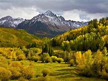

Mountains
The Mountain
A mountain is an elevated portion of the Earth's crust, generally with steep sides that show significant exposed
bedrock. A mountain differs from a plateau in having a limited summit area, and is larger than a hill, typically
rising at least 300 metres (1000 feet) above the surrounding land.
A few mountains are isolated summits, but most
occur in mountain ranges.
defination
.jpg)
There is no universally accepted definition of a mountain. Elevation, volume, relief, steepness, spacing and continuity have been used as criteria for defining a mountain. In the Oxford English Dictionary a mountain is defined as "a natural elevation of the earth surface rising more or less abruptly from the surrounding level and attaining an altitude which, relatively to the adjacent elevation, is impressive or notable."
Geology
.jpg)
There are three main types of mountains: volcanic, fold, and block.[11] All three types are formed from plate tectonics: when portions of the Earth's crust move, crumple, and dive. Compressional forces, isostatic uplift and intrusion of igneous matter forces surface rock upward, creating a landform higher than the surrounding features. The height of the feature makes it either a hill or, if higher and steeper, a mountain. Major mountains tend to occur in long linear arcs, indicating tectonic plate boundaries and activity.
Ecology
.jpg)
The colder climate on mountains affects the plants and animals residing on mountains. A particular set of plants and animals tend to be adapted to a relatively narrow range of climate. Thus, ecosystems tend to lie along elevation bands of roughly constant climate. This is called altitudinal zonation.In regions with dry climates, the tendency of mountains to have higher precipitation as well as lower temperatures also provides for varying conditions, which enhances zonation. Some plants and animals found in altitudinal zones tend to become isolated since the conditions above and below a particular zone will be inhospitable and thus constrain their movements or dispersal. These isolated ecological systems are known as sky islands.
Mountains and humans
.jpg)
The highest known permanently tolerable altitude is at 5,950 metres (19,520 ft).At very high altitudes, the decreasing atmospheric pressure means that less oxygen is available for breathing, and there is less protection against solar radiation (UV).[ Above 8,000 metres (26,000 ft) elevation, there is not enough oxygen to support human life. This is known as the "death zone".The summits of Mount Everest and K2 are in the death zone.